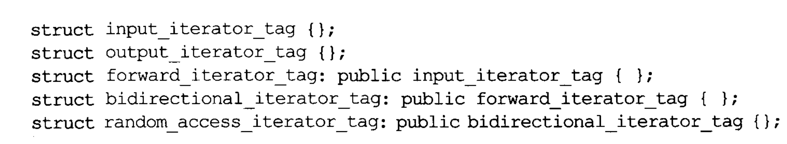

《Effective C++ 3th》读书笔记（二）
文接上回，本文将继续记录常见的 C++ 高效开发范式，这些范式均总结于《Effective C++ 3th》一书。由于该书出版年代较为久远，因此对于书中条款的不适用之处，作者将尽量予以纠正并给出自己的建议。
实现
- Page 148尽量延后变量定义的出现时机，并且以构造初始化代替先默认构造再赋值。这样可以增加程序的清晰度并改善程序效率。
- Page 155如果可以，应该避免使用转型，尤其是 dynamic_cast，可以选择 virtual 函数或保存派生类对象智能指针的方式加以避免；如果转型是必要的，试着将它隐藏于某个函数背后，而不需要客户自己去调用（对用户友好）；尽可能使用 C++ 的显式转型，以便于代码审查。
- Page 158避免返回的引用、指针以及迭代器指向对象内部的成员。遵守这个条款可以增加类的封装性，以避免出现类内成员比类对象生存期长的问题。若需要返回引用，请确保引用的常量性（const）与所指向成员的可访问性（private）保持一致。
- Page 160保证异常安全的两个条件：
- 不泄露任何资源（利用 RAII，将资源以对象的形式进行管理，然后通过对象的析构函数来释放）；
- 不允许数据被破坏（原子性与事务）；
- Page 161异常安全函数提供以下三个保证之一：
- 基本承诺：如果异常被抛出，程序内的任何事物仍然保持在有效状态（状态不唯一，合法即可）下。没有任何数据或对象会因此而败坏。所有对象都处于一种内部前后一致的状态（对异常的补偿，比如用默认资源占位）；
- 强烈保证：如果异常被抛出，程序状态不改变。即：函数成功就是完全成功，失败则回退到调用函数之前的状态；
- 不抛出异常（nothrow）保证：承诺绝不抛出异常；
- Page 162不要为了表示某件事情发生而改变对象状态，除非那件事情真的发生了。
- Page 165一个软件系统要么具备异常安全性，要么就完全不具备，没有所谓的“局部异常安全系统”。
- Page 166结合 Pimpl 与 copy-and-swap 来提供一定的异常安全性保证（一般可以提供强烈保证）：
namespace NS {
class A { // 实现类；
int v = 0;
public:
A(int v) : v(v) {}
A(A&& o) noexcept { v = o.v; }
A& operator=(A&& o) noexcept { v = o.v; return *this; }
A(const A& o) { v = o.v; }
int getV() const { return v; }
void setV(int val) { v = val; }
};
class B { // 对外接口类；
std::shared_ptr<A> impl; // 隐藏指向实现类的指针；
public:
B(int x) : impl(std::make_shared<A>(x)) {}
operator int() { return impl->getV(); }
B& operator=(const B&);
};
using spA = std::shared_ptr<A>;
}
namespace std {
// 被交换对象需要有 noexcept 的移动构造函数；
template<> void swap<NS::spA>(NS::spA& x, NS::spA& y) noexcept { x.swap(y); }
}
NS::B& NS::B::operator=(const B& o) { // 注意全特化 swap 定义和调用处的顺序；
auto copyImpl = std::make_shared<A>(*impl); // 当前实现体拷贝；
copyImpl->setV(o.impl->getV());
using std::swap;
swap(copyImpl, impl); // 交换；
return *this;
}
int main(int argc, char** argv) {
NS::B x(10), y(20);
y = x;
std::cout << static_cast<int>(y) << std::endl;
return 0;
}
- Page 171将大多数 inlining 限制在小型、被频繁调用的函数身上。这可使日后的调试过程和二进制升级更容易，也可使潜在的代码膨胀问题最小化，使程序的速度提升机会最大化。
- Page 175尽量让头文件能够“自我满足”，万一做不到则让它与其他文件内的声明式（非定义式）相依赖。简单的设计策略：
- 如果使用对象引用或指针（不需要提前自动类定义式）可以完成任务，就不要使用对象本身；
- 如果能够，尽量以类声明式替换类定义式；
- 为声明式和定义式提供不同的头文件；
- Page 180支持“编译依存性最小化”的一般构想是：相依于声明式而非定义式。采用 Handle Classes 和 Interface Classes（对应对象只能以指针或引用形式使用）两种模式。
- Page 180头文件应该以“完全且仅有声明式”的形式存在。这种做法不论是否涉及 template 都适用。
继承与面向对象设计
- Page 187“public 继承”意味 is-a。适用于基类身上的每一件事也一定适用于派生类身上，因为每一个派生类也都是一个基类对象。
- Page 193派生类内的名称会覆盖基类内的名称，可以使用 using 声明或转交函数来解决这个问题。
- Page 194声明一个纯虚函数的目的是为了让派生类只继承函数接口。声明非纯虚函数是为了让派生类继承该函数的接口和默认实现，但常见的问题是：对于没有覆盖基类虚函数的派生类将会自动使用基类的默认实现，而无法被控制。而声明一般的成员函数，则意味着该函数不打算在派生类中有不同的行为，即继承接口与一份强制实现。
class A {
int v = 0;
public:
A(int v) : v(v) {}
virtual void foo() = 0; // 利用纯虚函数为派生类提供默认实现；
};
void A::foo() { std::cout << "default implementation." << std::endl; } // 纯虚函数的默认实现；
struct B : public A {
using A::A;
void foo() { A::foo(); } // 默认实现需要被主动调用；
};
int main(int argc, char** argv) {
B x(10);
x.foo();
return 0;
}
- Page 203NVI（Non-Virtual Interface）手法（模板设计模式在 C++ 下的一种实现形式。其他方式还可以通过诸如“元编程”来实现该设计模式）：通过公有的普通成员函数（固定模板）间接调用私有的虚函数（核心实现部分采用不同的派生类实现）。
class A {
virtual void foo() { std::cout << "A" << std::endl; } // 私有虚函数，隐藏核心实现；
public:
void bar() {
std::cout << "do sth before." << std::endl;
foo(); // 调用核心实现（不同派生类不同）；
std::cout << "do sth after." << std::endl;
}
};
class B : public A {
void foo() { std::cout << "B" << std::endl; }
};
int main(int argc, char** argv) {
B().bar();
return 0;
}
- Page 209将虚函数替换为函数指针成员变量指向外界的函数实现，这是策略设计模式的一种特殊形式。将继承体系内的虚函数替换为另一个继承体系内的虚函数（以私有指针的形式指向该继承体系的类对象），这是策略设计模式的传统实现手法。
- Page 211任何情况下都不应该重新定义一个继承而来的非虚函数。
- Page 215绝对不要重新定义一个继承而来的缺省参数值，因为缺省参数值都是静态绑定，而虚函数却是动态绑定的，因此某些情况下默认参数与实际对象可能并不是正确对应的：
struct A {
virtual void foo(int x = 10) {
std::cout << "A" << x << std::endl;
}
};
struct B : public A {
virtual void foo(int x) override {
std::cout << "B" << x << std::endl;
}
};
int main(int argc, char **argv) {
B b;
A* a = &b;
a->foo(); // A 的静态默认参数传递给了 B 的 foo 函数；
return 0;
}
- Page 218组合意味着 “has-a”（拥有）或 “is-implemented-in-terms-of”（根据某物实现出），而 public 继承意味着 “is-a”。
- Page 220private 继承意味着“根据某物实现而得”。应尽可能使用组合，必要时（比如：派生类需要访问基类的 protected 成员时、考虑 EBO 的内存空间优化时）才使用 private 继承。
struct Timer {
virtual void onTick() {}
};
class A { // 使用组合；
struct ATimer : public Timer {
void onTick() { std::cout << "ATimer" << std::endl; }
};
ATimer timer;
};
- Page 222空类对象（无 non-static 成员）的占用大小为1字节，因此对于组合和 private 继承来说，后者对空间的利用率会稍高。
- Page 229多重继承的一个较为合理的应用场景：使用公有继承某个接口类，使用私有继承某个实现类。
- Page 230虚继承会增加应用大小、运行速度以及初始化复杂度等成本。如果虚基类不带有任何数据（不需要底层派生类为其进行初始化），将是最具实用价值的情况。
struct A {
A() = default;
A (int v) : v(v) {}
int v = 20;
};
struct B : virtual public A {};
struct C : virtual public A {};
struct D : public B, public C {
D() : A(10), B(), C() {}
};
模板与泛型编程
- Page 231C++ 模板机制自身是一部完整的图灵机，它可被用来计算任何可计算的值，因此出现了模板元编程 TMP（在编译器内执行并于编译完成时停止执行）。
template <int N>
struct Factorial {
enum { val = Factorial<N-1>::val * N };
};
template<>
struct Factorial<0> {
enum { val = 1 };
};
int main() {
std::cout << Factorial<4>::val << std::endl; // 编译时求值；
}
- Page 235类和模板都支持接口和多态。对类而言接口是显式的，以函数签名为中心；多态则是通过虚函数发生于运行期。对模板参数而言，接口是隐式的，基于有效表达式。多态则是通过模板具现化和函数重载解析发生于编译期。
- Page 239使用关键字 typename 标识嵌套从属类型名称；但不得在类继承列表及成员初始化列表中修饰基类类型。
template<typename T>
struct A {
std::vector<T> v = {};
typename std::vector<T>::const_iterator headIter; // 模板内使用嵌套从属类型名时需要加 typename；
A (std::vector<T> v) : v(v) { headIter = v.begin(); }
};
int main(int argc, char **argv) {
A<int> a(std::vector<int>{10, 2, 3});
std::cout << *a.headIter << std::endl;
return 0;
}
- Page 242通常情况下，C++ 不会在模板化的基类内隐式地寻找成员（因为基类实际具现化的接口可能由于模板全特化等原因而不稳定），因此派生类需要在调用处显式地通过 “this->” 指明想要在模板基类内寻找的名称。
template<typename T>
struct A {
T foo() { return T(); }
};
template<typename T>
struct B : public A<T> {
// 需要通过 “this” 显式调用，若使用 “A<T>::foo()” 会导致虚函数动态调用失效；
void bar() { std::cout << this->foo() << std::endl; }
};
int main(int argc, char **argv) {
B<int>().bar();
return 0;
}
- Page 249模板生成多个类和多个函数，所以任何模板代码都不该与某个造成膨胀的模板参数产生相依关系。因非类型模板参数造成的代码膨胀，往往可以消除，做法是以函数参数或类成员变量替换模板参数（私有继承，并在基类模板中去掉类型模板参数）；因类型参数造成的代码膨胀，往往可以降低，做法是让带有完全相同二进制表述的具体类型共享实现代码。
template<typename T>
struct A {
size_t foo(size_t n) const { return n; };
};
template<typename T, size_t n>
struct B : private A<T> {
using A<T>::foo; // 让基类的同名函数可见；
size_t foo() {
return this->foo(n);
}
};
int main(int argc, char **argv) {
B<int, 1>().foo();
return 0;
}
- Page 254模板泛型编程：
struct A {
virtual char foo() const { return 'A'; }
virtual ~A() {}
};
struct B : public A {
char foo() const { return 'B'; }
~B() {}
};
template<typename T>
class SmartPointer {
T* rp = nullptr;
public:
SmartPointer(T* rp) : rp(rp) {}
SmartPointer(const SmartPointer& o) {} // 非泛化的拷贝构造函数；
SmartPointer& operator=(const SmartPointer& o) { return *this; }
const SmartPointer<T>* operator->() const { return this; }
T* get() const { return rp; }
template<typename U>
SmartPointer(const SmartPointer<U>& o) : // 模板拷贝构造函数；
rp(static_cast<T*>(o->get())) {} // 根据 U 生成 T；
};
int main(int argc, char **argv) {
A a;
B b;
auto bp = SmartPointer<B>(&b);
SmartPointer<A> ap = bp; // 与原始指针保持一致，支持隐式（implicit）转换；
std::cout << ap->get()->foo() << std::endl; // 'B'；
return 0;
}
- Page 254请使用成员函数模板生成“可接受所有兼容类型”的函数。如果声明成员函数模板用于“泛化拷贝构造”或“泛化赋值操作”，你还是需要声明正常的拷贝构造函数和拷贝赋值操作符。
- Page 258由于在模板参数的推导过程中，编译器不会将隐式类型转换函数纳入考虑。因此在为类模板编写需要带有类型转换的 operator= 运算符时，需要使用内联的 friend 函数（friend 不属于对象，以便于接受两个运算数；内联可以解决链接器找不到符号的问题）。
template<typename T>
struct A {
// 友元函数的具象化跟随模板类的具象化过程，因此其中一个参数的 T 确定后，则整个函数便被确定；
friend const A operator+(const A& lhs, const A& rhs) {
return lhs.v + rhs.v;
};
T v;
A(T v) : v(v) {}
};
/*
template<typename T>
const A<T> operator+(const A<T>& lhs, const A<T>& rhs) { // 无法推导；跟模板类没有直接关系，需要从参数往候选类正向推导；
return lhs.v + rhs.v;
};
*/
int main(int argc, char **argv) {
A<int> x(10);
auto z = x + 10;
std::cout << z.v << std::endl;
return 0;
}
- Page 260C++ 五类迭代器的“卷标结构”：

- Page 260traits 模板类主要用于在编译期（借助重载和 traits 模板类）/运行时（借助 typeid）来获取某些类型信息。比如：std::iterator_traits 通过自定义类型内的 iterator_category 来获取类型信息。对于内置指针类型，则使用其偏特化版本，并将其指定为“随机访问迭代器”类型。其他 traits 类大同小异。（traits + 重载 = 一种 TMP）
template<typename T>
struct IterWrapper {
T iter;
IterWrapper(T iter) : iter(iter) {}
// 主调函数;
void foo() { overloadedFoo(typename std::iterator_traits<T>::iterator_category()); }
// 重载部分的候选函数（编译时选择）;
void overloadedFoo(std::random_access_iterator_tag) { std::cout << "Random Access Iterator." << std::endl; }
void overloadedFoo(std::forward_iterator_tag) { std::cout << "Forward Iterator." << std::endl; }
};
int main(int argc, char **argv) {
std::vector<int> v = {};
IterWrapper<std::vector<int>::iterator>(v.begin()).foo();
return 0;
}
- Page 270TMP 模板元编程的优势：
- 可以将工作由运行时移至编译器，因而得以实现早起错误侦测和更高的执行效率；
- 可被用来生成“基于政策选择组合（policy-based）”的客户定制代码，也可以用来避免生成对某些特殊类型并不合适的代码；
定制 new 和 delete
- Page 279实现类专属的 new-handlers：
struct HandlerHolder { // 保存旧的 handler，析构时自动重置；
explicit HandlerHolder(std::new_handler nh) { handler = nh; };
~HandlerHolder() { std::set_new_handler(handler); }
HandlerHolder(const HandlerHolder&) = delete;
HandlerHolder& operator=(const HandlerHolder&) = delete;
private:
std::new_handler handler;
};
struct A {
static std::new_handler set_new_handler(std::new_handler p) noexcept {
// 存储新的 handler，返回旧的 handler，以 RAII 的形式管理；
auto o = currentHandler;
currentHandler = p;
return o;
};
static void* operator new(size_t size) {
HandlerHolder h(std::set_new_handler(currentHandler)); // RAII;
return ::operator new(size);
};
private:
static std::new_handler currentHandler;
double arr[100000000000000l];
};
std::new_handler A::currentHandler = 0;
int main(int argc, char **argv) {
A::set_new_handler([]() -> void {
std::cout << "Memory Allocation Failed!" << std::endl;
});
auto p = new A();
delete p;
return 0;
}
- Page 282何时使用自定义的内存分配器：
- 为了检测运用错误；
- 为了收集动态分配内存的使用统计信息；
- 为了增加分配和归还的速度；
- 为了降低缺省内存管理器带来的空间额外消耗；
- 为了弥补缺省内存管理器中的非最佳齐位；
- 为了将相关对象集中；
- 为了获得非传统行为；
- Page 288operator new 及 operator delete 的重写要点：
- operator new 应该包含一个无穷循环，并在里面尝试分配内存，如果无法满足，则调用 new-handler；它同时也应该有处理 0 字节申请的能力。类专属版本还应该处理“比正确大小更大的错误申请（交由 std::operator new）”；
- operator delete 应该在收到 nullptr 时不做任何事情；类专属版本还应该处理“比正确大小更大的错误申请（交由 std::operator delete）”；
- Page 293* 当你写一个自定义的 placement operator new 时，也需要写出对应的 placement operator delete，否则可能会发生隐式（比如在类对象构造函数抛异常时，编译器需要自动调用具有相同参数的 delete operator 来释放内存，否则内存无法被释放）的内存泄露；
- 当声明 placement new 和 placement delete 时，请确保不要覆盖标准库的版本；
评论 | Comments